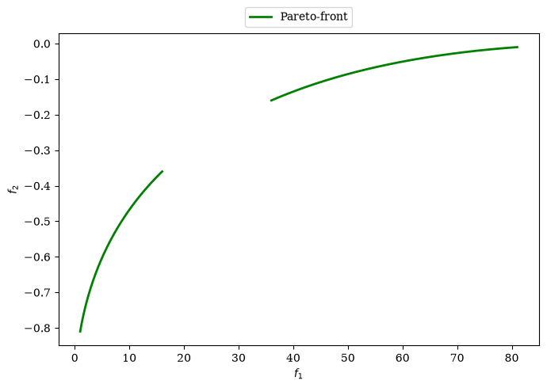
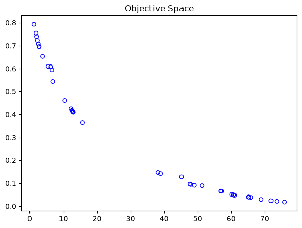

Panduan Memulai Cepat (Quick Start)
Panduan ini akan menuntun Anda melalui langkah-langkah dasar penyelesaian masalah optimasi multiobjektif menggunakan pymoo. Kita akan memformulasikan masalah matematika dengan kendala (constraints) dan menyelesaikannya menggunakan algoritme genetika populer, NSGA-II.
1. Formulasi Masalah Matematika
Kita akan menyelesaikan masalah optimasi dua objektif (bi-objective) dengan dua kendala pertidaksamaan (inequality constraints) berikut:
$$\begin{align*} \min \quad & f_1(x) = 100 \, (x_1^2 + x_2^2) \\ \max \quad & f_2(x) = -(x_1-1)^2 - x_2^2 \\ \text{s.t.} \quad & g_1(x) = 2 \, (x_1 - 0.1) \, (x_1 - 0.9) \le 0 \\ & g_2(x) = 20 \, (x_1 - 0.4) \, (x_1 - 0.6) \ge 0 \\ \text{bounds} \quad & -2 \le x_1, x_2 \le 2 \end{align*}$$
Standarisasi Pymoo: Pymoo mengasumsikan semua fungsi objektif harus diminimalkan, dan semua kendala harus berbentuk $$g(x) \le 0$$. Oleh karena itu, kita perlu memodifikasi formulasi asli kita:
- Maksimalkan $$f_2(x)$$ diubah menjadi Minimalkan $$-f_2(x)$$ yaitu $$(x_1-1)^2 + x_2^2$$.
- Pertidaksamaan $$g_2(x) \ge 0$$ dikalikan $$-1$$ menjadi $$-g_2(x) \le 0$$.
Formulasi standar Pymoo yang akan diimplementasikan:
$$\begin{align*} \min \quad & f_1(x) = 100 \, (x_1^2 + x_2^2) \\ \min \quad & f_2(x) = (x_1-1)^2 + x_2^2 \\ \text{s.t.} \quad & g_1(x) = 2 \, (x_1 - 0.1) \, (x_1 - 0.9) \, / \, 0.18 \le 0 \quad \text{(ternormalisasi)} \\ & g_2(x) = -20 \, (x_1 - 0.4) \, (x_1 - 0.6) \, / \, 4.8 \le 0 \quad \text{(ternormalisasi)} \end{align*}$$

2. Implementasi dalam Python
Gunakan kelas ElementwiseProblem dari Pymoo untuk mendefinisikan masalah ini:
import numpy as np
from pymoo.core.problem import ElementwiseProblem
class MyProblem(ElementwiseProblem):
def __init__(self):
super().__init__(n_var=2,
n_obj=2,
n_ieq_constr=2,
xl=np.array([-2.0, -2.0]),
xu=np.array([2.0, 2.0]))
def _evaluate(self, x, out, *args, **kwargs):
f1 = 100 * (x[0]**2 + x[1]**2)
f2 = (x[0]-1)**2 + x[1]**2
g1 = 2*(x[0]-0.1) * (x[0]-0.9) / 0.18
g2 = -20*(x[0]-0.4) * (x[0]-0.6) / 4.8
out["F"] = [f1, f2]
out["G"] = [g1, g2]
problem = MyProblem()3. Konfigurasi Algoritme NSGA-II
Inisialisasi algoritme NSGA-II lengkap dengan operator evolusinya (Sampling, Crossover, dan Mutation):
from pymoo.algorithms.moo.nsga2 import NSGA2
from pymoo.operators.crossover.sbx import SBX
from pymoo.operators.mutation.pm import PM
from pymoo.operators.sampling.rnd import FloatRandomSampling
algorithm = NSGA2(
pop_size=40,
sampling=FloatRandomSampling(),
crossover=SBX(prob=0.9, eta=15),
mutation=PM(eta=20),
eliminate_duplicates=True
)4. Eksekusi Optimasi
Tentukan kriteria terminasi (misal: 40 generasi) dan panggil fungsi minimize():
from pymoo.optimize import minimize
from pymoo.termination import get_termination
termination = get_termination("n_gen", 40)
res = minimize(problem,
algorithm,
termination,
seed=1,
save_history=True,
verbose=True)
print("Solusi keputusan (X):", res.X)
print("Nilai objektif (F):", res.F)
5. Pengambilan Keputusan & Analisis Konvergensi
Setelah mendapatkan Pareto Front, Anda dapat menyaring satu solusi terbaik berdasarkan bobot prioritas menggunakan Pseudo-Weights atau mengukur kualitas konvergensi melalui nilai Hypervolume.
Pelajari metode ini secara mendalam di halaman Multi-Criteria Decision Making (MCDM).